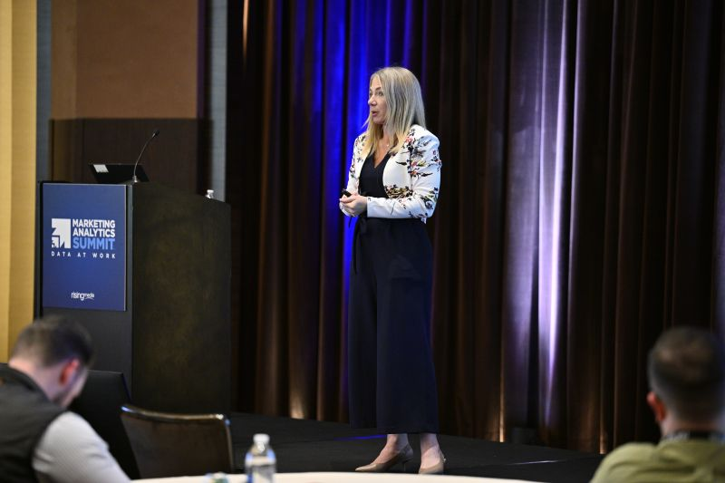

Signal
The mark becomes the art piece
The site starts from Jessica's actual mark and turns it into a sculptural object with depth, glow, and motion instead of leaving it as a small static brand stamp.
Logo as art piece
This concept turns Jessica Lea's core ideas into living typography, while treating the SVG logo itself like an art piece suspended inside the Three.js scene.
Instead of treating the homepage like a flat brochure, this version frames Jessica as the person who helps leaders bring order to motion and meaning to complexity.
Logo art piece system
Move your cursor and the type responds. The logo now leads the composition, with the words orbiting around it like a visual language built from the mark itself.

Profile presence
Jessica's portrait anchors the experiment so the Three.js motion feels connected to a real person and point of view.
Why this direction
Signal
The site starts from Jessica's actual mark and turns it into a sculptural object with depth, glow, and motion instead of leaving it as a small static brand stamp.
Motion
The type field responds softly to the viewer, hinting at how Jessica works with leaders to create alignment and forward momentum.
Authority
The surrounding layout stays calm, editorial, and readable so the concept feels elevated rather than gimmicky.

System idea
This is more than a homepage trick. The typography system could become a full visual device for keynotes, consulting offers, social snippets, and launch materials.
Interactive type establishes a distinct first impression.
Words can reassemble as users move through proof, offers, and contact.
The same 3D words could support keynotes, offsites, and workshop environments.
About Jessica Lea
Jessica Lea works across healthcare, pharmaceutical, and consumer contexts to connect insight, organizational behavior, and decision-making so growth becomes actionable.
This concept takes that same idea and gives it a more immersive visual form: language with depth, motion, and structure.
Next move
Replace the placeholder contact details below with Jessica's live email, booking link, and LinkedIn profile to make this concept launch-ready.
Email your-email@example.com
Booking your-calendar-link.com
LinkedIn linkedin.com/in/your-profile